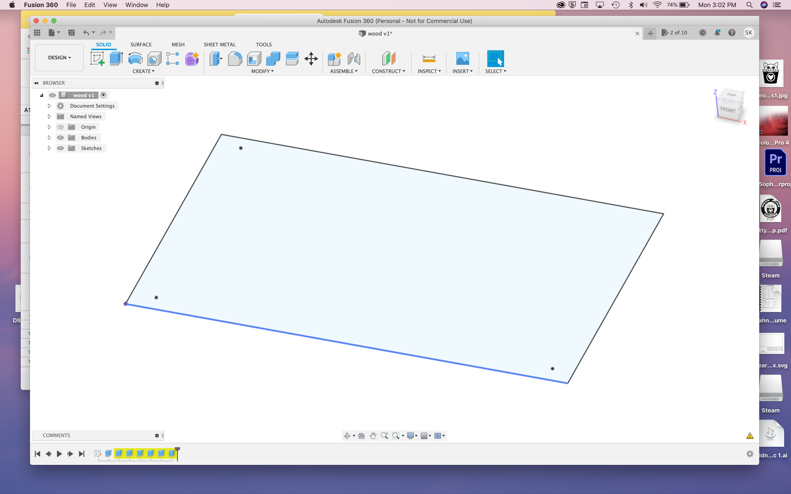
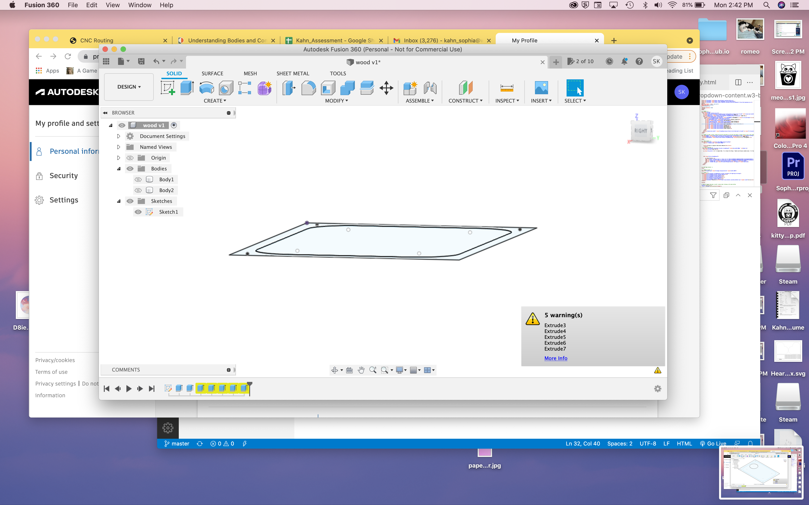
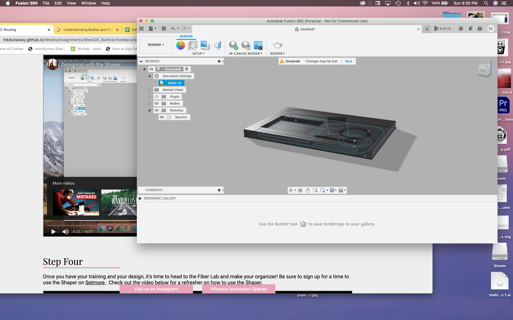
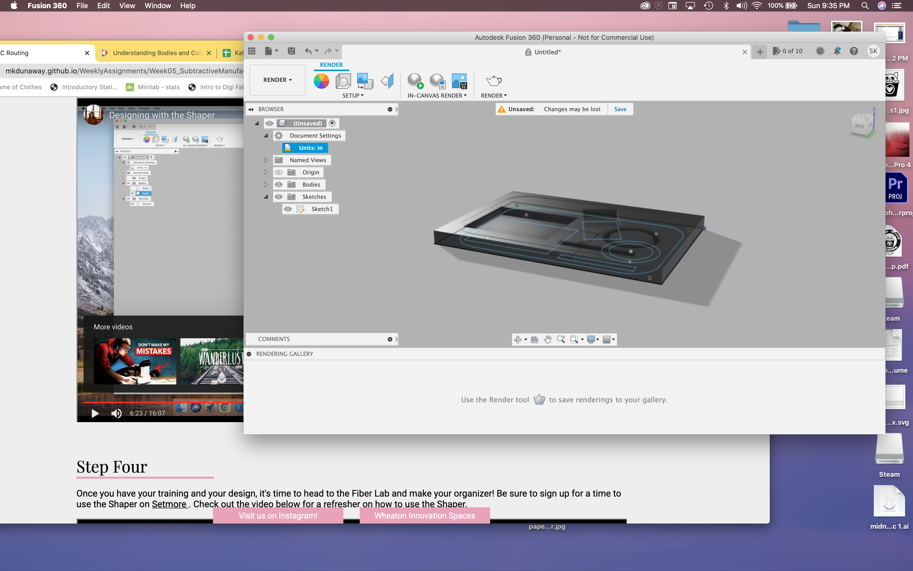
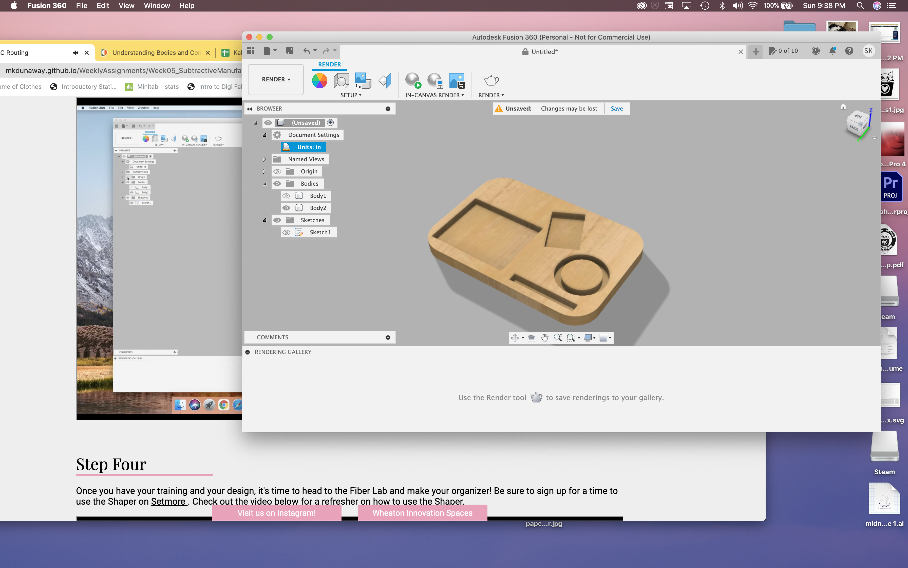
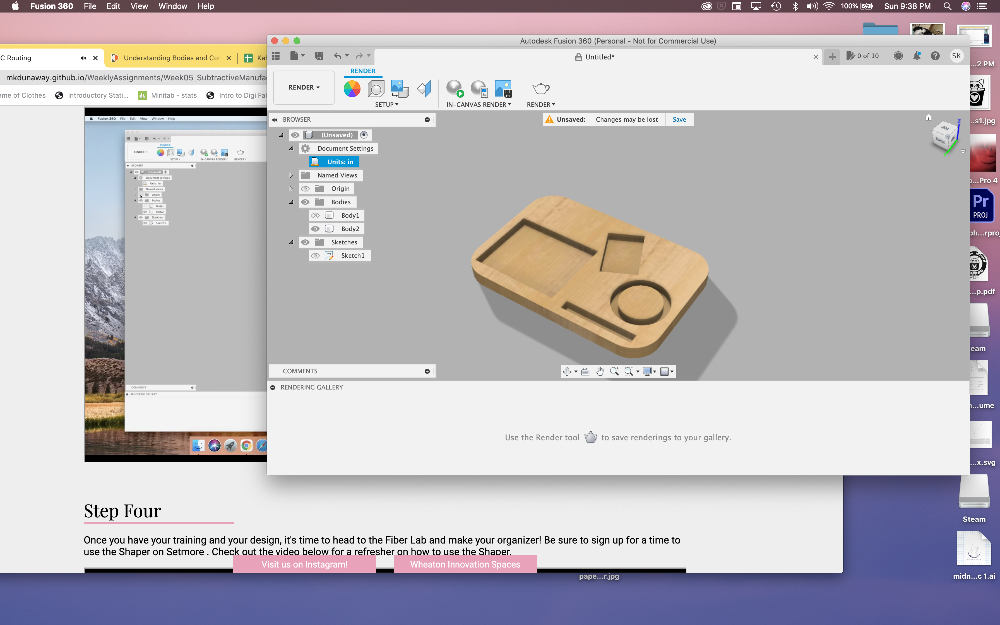
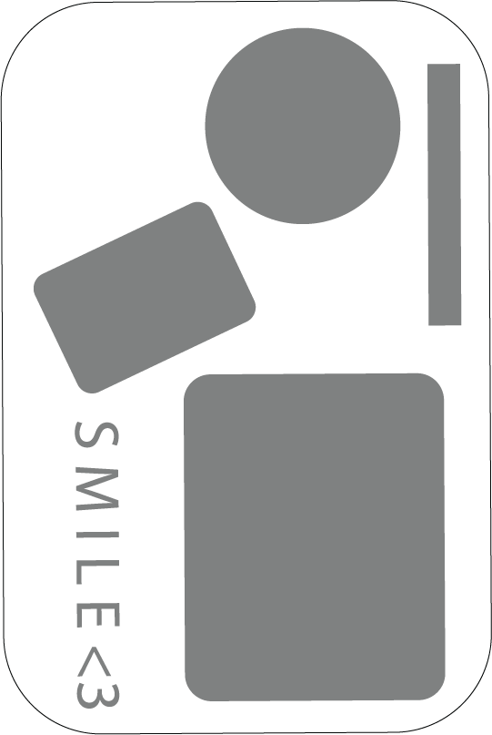

CNC Routing
This project was to make a desk organizer with the CNC router. I had a bit of trouble getting my training and work time scheduled, so I started this project quite a bit later than I wanted to! First, I familiarized myself with Autodesk Fushion 360. First, I followed through the instructions linked, and then I followed along with Madison's video to create my organizer!




 

 

Next I went into the fab lab for my training with Tuna! Learning how to use the machine was very interesting.

These are the instructions on what to do before you start using the shaper! They're a very useful checklist

When using the CNC router, you want to turn on the switch on the extension cord. This allows you to turn on the vaccum and the shaper itself

This is the button for the vaccum! It's very important to make sure you use it to clean your workplace not only at the beginning and the end, but in between the different cuts! When your workplace is clean, you want to make sure your SVG is loaded onto the shaper USB. When you place your wood into the space, you want to make sure there are two strips of the double sided tape on the back, as well as at least two screws holding it in place.

Once everything is on, and you've cleaned your area, you want to scan the area. The shaper itself can't see where it's going without scanning the little domino shaped tape that's around it. After that, you want to make sure you z-touch, so the shaper knows how far away the wood is from the tip of the mill. The above image is a close up of the shaper's screen, when you are drilling different parts of the design, you need to change the depth. Above it is set to .125, in order to do the letters.

When you're making your pockets, you have to make sure that you switch the setting from "on line" or "inside line" to "pocket". Don't yank the shaper back and forth, even though you have a big space to drill into! You want to make sure you're always moving the shaper in concentric circles. When you're ready to cut, press the green button on the shaper, and go!

When you finish a cut, you want to retract the drill before turning it off! Then, make sure you clean the space, and turn off the switch on the extension cord.
With my training done, now it was time to return to the fab lab and actually make my organizer! Here is my design file
Using the shaper was so cool! I made my pockets all different sizes, with the large one for the squishmallow and the small one for the charging pad being the deepest. I decided not to put my initials on this, and instead wrote Smile with a heart.


I love how the organizer came out! It looks so cute on my desk

Thanks for reading!